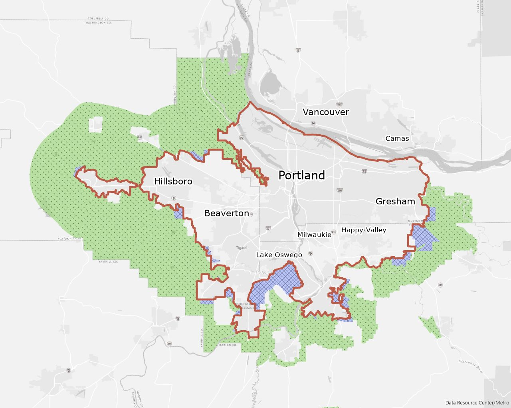
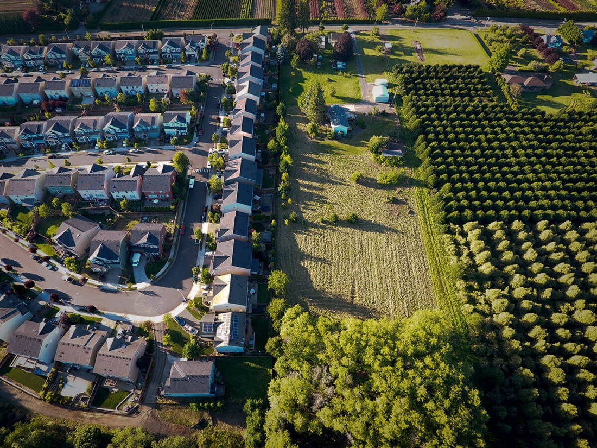

중간고사 풀이
중간고사 풀이: 1. 빈칸 채우기
1. 다음 빈 칸에 알맞은 용어를 기술하시오. (각 1점 / 5점)
1) 다른 참여자들의 선택이 주어진 상태에서 어느 의사결정자도 자기 행동을 바꿀 유인이 없는 상태를 ( )(이)라고 한다. → 내쉬균형 (2강)
2) 집적의 경제 가운데 외적인 효과가 특정 산업에 속한 기업들에 한정되는 것을 ( )(이)라고 하고, 산업의 경계를 넘나드는 것을 도시화경제라고 한다. → 지역화경제 (3강)
3) 중심지이론에서 기업이 살아남는 데 필요한 최소시장규모를 ( )(이)라고 하며, 재화의 도달범위가 이보다 넓어야 중심지가 성립한다. → 최소요구치 (4강)
4) 한 지역이 모든 재화를 더 효율적으로 생산하더라도, 각 지역이 기회비용이 상대적으로 낮은 재화에 특화하면 교역으로 두 지역 모두 이득을 얻는다. 이 교역의 근거를 ( )(이)라고 한다. → 비교우위 (2강)
5) 한 나라의 도시들을 인구 순으로 늘어놓으면, 도시의 인구가 그 도시의 순위에 반비례하는 경향이 나타난다. 이를 ( )(이)라고 한다. → 순위−규모 법칙(지프의 법칙) (4강)
중간고사 풀이: 2. 참과 거짓 1)~3)
2. 다음 명제의 참 / 거짓을 판단하시오. (각 1점 / 5점)
1) 파레토 효율적인 배분은 언제나 형평성도 만족하므로, 코코넛 12개를 두 사람이 나눌 때 파레토 효율적인 배분은 6개씩 나누는 것 하나뿐이다. → 거짓: 효율성은 형평성이 아님. 12개를 남김없이 나누는 배분은 모두 파레토 효율적 (2강)
2) 목재 5톤으로 야구방망이 1톤을 만드는 기업은 생산물의 단위 운송비가 더 높더라도 중량−감소 행위를 하므로 시장−지향적 기업이 된다. → 거짓: 생산요소의 금전적 중량이 더 커 자원−지향적 (3강)
3) 경쟁 시장에서 기업의 경제적 이윤이 0이 되면, 기업의 소유주는 사업에서 아무런 소득도 얻지 못한다. → 거짓: 경제적 이윤 0은 소유주의 시간과 자본의 기회비용을 모두 보상받은 상태(정상이윤) (1강)
중간고사 풀이: 2. 참과 거짓 4)~5)
4) 같은 산업의 기업들이 한 도시에 모여 숙련 노동자를 함께 쓰는 노동시장 공유의 이점은, 모든 기업의 매출이 동시에 함께 줄어들 때 가장 크다. → 거짓: 한 기업의 매출이 줄 때 다른 기업의 매출이 늘어야, 내보낸 노동자를 이웃 기업이 고용할 수 있음 (3강)
5) 중심지이론에서 상위 중심지는 하위 중심지가 공급하는 재화를 모두 공급하고, 그보다 더 많은 종류의 재화를 공급한다. → 참: 상위 중심지는 하위 중심지의 재화를 모두 포함 (4강)
중간고사 풀이: 3. 도시노동시장
3. 노동공급 w = 80 + 0.2L, 노동수요 w = 200 − L (L 은 천명, w 는 일당 달러). 수출재 노동수요가 10,000명, 승수효과로 지역재 노동수요가 20,000명 늘어 수요가 w = 230 − L 로 바뀜 (10점)
1) 초기 균형
80 + 0.2L = 200 − L → L = 100(천명), w = 100달러 (점 a)
2) 새 균형
80 + 0.2L = 230 − L → L = 125(천명), w = 105달러 (점 b)
3) 시장−기반 고용승수
Δ총 고용 25,000 / Δ수출재 고용 10,000 = 2.5
4) 임금이 그대로일 때와 비교
w = 100 이면 수요 130(천명) → 30,000 / 10,000 = 3.0 (점 c)
공급곡선이 우상향이라 노동자를 더 끌어오려면 임금이 올라야 하고,
오른 임금이 노동수요량을 줄여 승수가 2.5 로 작아짐
중간고사 풀이: 4. 단일도심모형의 입찰지대곡선 1)~2)
4. 사무업 r = 600 − 100x, 제조업 r = 360 − 40x, 주거 r = 240 − 20x, 농업 40달러 (x 는 km, 1헥타르당 달러) (10점 중 6점)
1) 경계와 구간
사무업 = 제조업: x = 4 · 제조업 = 주거: x = 6 · 주거 = 농업: x = 10
→ 사무업 0~4km, 제조업 4~6km, 주거 6~10km, 도시 경계 10km
2) 시장 토지지대곡선
r = 600 − 100x (0~4) · 360 − 40x (4~6) · 240 − 20x (6~10) · 40 (10~)
→ r(2) = 400, r(5) = 160, r(8) = 80
사무업이 가장 가파른 이유: 중심과의 대면 교류에 드는 이동비가 단위 토지당 가장 커서, 1km 멀어질 때 낼 수 있는 지대가 가장 많이 줄어듦
중간고사 풀이: 4. 단일도심모형의 입찰지대곡선 3)
3) 통근비가 낮아져 주거의 입찰지대가 r = 240 − 16x 로 바뀜. 새 경계, 전후 곡선, 제조업 구간과 도시 규모의 변화 (4점)
새 경계
제조업 = 주거: 360 − 40x = 240 − 16x → x = 5
주거 = 농업: 240 − 16x = 40 → x = 12.5 · 사무업 경계 4km 는 그대로
변화
주거 곡선이 완만해져 제조업 구간은 4~6km → 4~5km로 줄고, 주거가 5~12.5km 를 차지함
도시 경계가 10km → 12.5km로 넓어져 도시가 바깥으로 커짐
중간고사 풀이: 5. 소비자 대체와 주택가격
5. 10km 에 살며 단위당 6달러에 주택 100단위 소비. 통근비는 매월 km당 50달러. 6km 지점의 주택가격은? (5점)
1) 원래 묶음을 그대로 살 수 있는 가격
통근비 절감 = 4km × 50달러 = 200달러 → 주택 100단위에 200달러를 더 써도 됨
→ 6 + 200/100 = 8달러
2) 소비자 대체가 있을 때
8달러보다 높음. 8달러 예산선은 E 를 지나지만 기울기가 E 의 한계대체율보다 커서 무차별곡선을 가름
주택을 줄이고 다른 재화를 늘리면 효용이 오르므로 가구가 더 들어오고,
가격은 효용이 원래 수준이 될 때까지 오름(P*, 교재의 예: 9달러)
→ 대체효과로 주택소비는 100단위보다 줄어듦
주: 무차별곡선은 P* 가 교재의 예(9달러)가 되도록 그린 개념도. 원래 묶음 E 는 주택 100단위
중간고사 풀이: 6. 수도권 일극 집중과 도시효용곡선
6. 두 도시는 각자 언덕 모양의 효용곡선을 가짐. 지방 도시는 정점 왼쪽에 있고 수도권 효용이 더 높음 (5점)
1) 이주가 멈추지 않고 빨라지는 이유
이주가 멈추는 조건은 두 곡선에서 읽은 효용이 같아지는 것
지방 도시는 정점 왼쪽이라 인구가 빠질수록 집적의 경제와 다양성이 줄어 효용이 더 낮아짐 → 격차가 커지는 자기−강화적 이주
수도권이 음의 기울기 구간이라 조금 내려가도, 지방이 더 빨리 내려가는 한 격차는 닫히지 않음
2) 수도권 기반시설 투자
혼잡 비용이 줄어 수도권 곡선만 위·오른쪽으로 이동, 지방 곡선은 그대로
격차가 다시 커져 이주가 빨라짐 → 수도권 인구 ↑, 지방 도시는 곡선을 따라 왼쪽으로 내려가며 인구 ↓
주: 곡선의 높이와 위치는 개념도
9주차. 이웃과 토지이용정책
지난 시간: 고용과 주거의 공간적 분포
→ 이제까지 토지는 가장 높은 값을 부른 쪽에 배분됐음
오늘은 그 입찰이 이웃을 어떻게 구분하는지(15장), 정부가 개입하면 무엇이 달라지는지(16장)를 봄
CHAPTER 15 이웃
14장이 도시 전체를 봤다면 이 장은 이웃 하나를 들여다본다 · 교재 p.309~328
비유사성 지수 (dissimilarity index)
주거지 분리(residential segregation)를 측정하는 지표
$D = 100 \cdot \tfrac{1}{2} \sum_{i=1}^{N} \left| \dfrac{a_i}{A} - \dfrac{b_i}{B} \right|$
$a_i$, $b_i$:이웃 i 에 사는 두 유형(흑인과 백인, 낮은-소득과 높은-소득 등)의 인구
$A$, $B$:해당 도시에서 각 유형별 전체 인구수
→ D 의 뜻: 모든 이웃을 같은 비율로 만들려면 한 유형의 D% 가 이주해야 함
소득·인종별 주거지 분리: 소득은 심화, 인종은 완화
주: 이웃 = 인구조사구역. 낮은-소득은 국가 빈곤수준 미만(왼쪽 위), 국가 중위소득의 2/3 이하(왼쪽 아래)
출처: Florida and Mellander (2015) · Fry and Taylor (2012) · Logan and Stults (2011) (교재 표 15−1·15−2, 그림 15−2)
→ 소득: 같은 소득층끼리 모여 사는 비중이 양 끝에서 모두 늘어 분리 심화
→ 인종: 흑인−백인 지수가 73 → 59로 완화, 흑인이 적은 대도시에서 가장 크게 줄었음
주거지 분리가 발생하는 이유
동류의 이웃을 뚜렷이 선호하지 않아도
동질적인 이웃을 만드는 힘이 존재
(1) 지역 공공재 수준의 선택
왜 비슷한 사람끼리 모이는가: 첫 번째 이유 · 교재 p.315~320
소득이 다르면 원하는 공공서비스와 세금 수준이 다름
원하는 수준이 같은 가구끼리 한 지자체에 모임
→ 발로 하는 투표
세금을 많이 내는 가구는 따로 관할구역을 만들 유인
(2) 이웃에 대한 선호
모두가 같은 이웃을 원하면 누가 갖는가 · 교재 p.320~328
선호하는 이웃이 같으면 그 땅은 입찰로 배분
더 높은 할증금을 내는 유형이 그 이웃을 차지
→ 분리
부지 크기의 차이는 통합을 살리기도 함
분리의 이유: (1) 지역 공공재 수준의 선택
발로 하는 투표(voting with the feet):주민들이 자신에게 가장 잘 맞는 세금과 공공서비스를 제공하는
지방자치단체를 선택해 이주
→ 티부 가설(Tiebout Hypothesis): 지자체나 국가는 주민(소비자)을 유치하기 위해
더 나은 행정 서비스와 환경을 제공하기 때문에, 공공재 공급이 효율적으로 이루어지도록 유도
조건
학군 하나에 시민 300명 (낮은·중간·높은 소득 각 100명)
공공재는 교사의 수, 재원은 인두세
→ 모두 같은 가격이라 예산선이 평행
교사는 정상재 → 소득이 높을수록 더 많이 원함 (점 l · m · h)
설명
투표로 정하면 중위투표자(중간-소득)가 이겨 t*
→ 낮은 쪽(t′)과 높은 쪽(t″) 모두 불만
학군을 따로 만들면 각자 점 l · h 를 얻음
→ 소득에 따라 패지어 삶
분리의 이유: (2) 이웃에 대한 선호
조건
이웃 둘(서부·동부)에 가구 24 (파란색 12 · 녹색 12)
가구마다 토지 1단위
모두가 파란색이 많은 이웃을 선호
(아이는 어른을 모방, 이웃에게서 일자리 정보)
할증금:서부 입찰가격 − 동부 입찰가격
서부가 파래질수록 두 유형 모두 더 내려 함
파란색 가구의 지불용의가 더 크면: 높은 소득 거주민
6 대 6 (점 i): 할증금 0, 옮길 유인이 없는 균형
한 쌍이 자리를 바꿔 7 대 5 가 되면
파란색 30달러(점 b) > 녹색 21달러(점 g)
→ 파란색이 서부 부지를 계속 차지
서부가 모두 파란색(점 s)인 완전한 분리로 끝남
분리의 이유: (2) 이웃에 대한 선호
곡선의 위치가 다르면: 혼합이 안정적 균형
9명 전에는 파란색이, 9명 뒤에는 녹색이 더 높은 할증금
→ 어느 쪽으로 벗어나도 점 m 으로 돌아옴
부지 크기가 다르면: 통합이 안정적 균형
파란색이 토지 2단위를 쓰면 할증금은 단위당 15달러(점 h)
→ 녹색 21달러보다 낮아 6 대 6 통합으로 돌아옴
→ 최소부지규모 용도지역제가 녹색에게도 2단위를 강제하면 단위당 10.50달러
시장이 만든 통합이 다시 분리로 바뀜 (16장에서 다룸)
CHAPTER 16 토지이용정책
교재 p.335~356
용도지역제
용도지역: 토지의 이용 및 건축물의 용도·건폐율·용적률·높이 등을 제한해
토지를 경제적·효율적으로 이용하고 공공복리의 증진을 도모하기 위하여
서로 중복되지 아니하게 도시·군관리계획으로 결정하는 지역
출처: 「국토의 계획 및 이용에 관한 법률」 제2조 제15호 · 용도지역제는 이 지역을 지정해 토지이용을 규제하는 제도
용도지역제를 설정하는 이유
1. 토지의 경제적·효율적 이용:용도·건폐율·용적률·높이를 제한해
토지마다 알맞은 용도와 밀도를 정함 (제2조 제15호)
2. 생활환경 보호와 편익 증진:주거지역은 거주의 안녕과 건전한 생활환경을,
상업·공업지역은 상업·업무·공업의 편익을 위해 지정 (제36조)
3. 무질서한 확산 방지와 보전:녹지지역은 자연환경·농지·산림의 보호와
도시의 무질서한 확산 방지를 위해 지정 (제36조)
우리나라의 용도지역제
국토를 4개 용도지역으로 나누고, 도시지역은 다시 16개로 세분해 건폐율·용적률의 한도를 정함
| 구분 | 세분 | 지정 목적 (시행령 제30조) | 건폐율 | 용적률 |
|---|---|---|---|---|
| 주거 | 제1종 전용 | 단독주택 중심의 양호한 주거환경 | 50 | 50~100 |
| 제2종 전용 | 공동주택 중심의 양호한 주거환경 | 50 | 50~150 | |
| 제1종 일반 | 저층주택 중심의 편리한 주거환경 | 60 | 100~200 | |
| 제2종 일반 | 중층주택 중심의 편리한 주거환경 | 60 | 100~250 | |
| 제3종 일반 | 중고층주택 중심의 편리한 주거환경 | 50 | 100~300 | |
| 준주거 | 주거기능 위주, 일부 상업·업무기능 보완 | 70 | 200~500 | |
| 상업 | 중심상업 | 도심·부도심의 상업·업무기능 확충 | 90 | 200~1,500 |
| 일반상업 | 일반적인 상업·업무기능 | 80 | 200~1,300 | |
| 근린상업 | 근린지역의 일용품·서비스 공급 | 70 | 200~900 | |
| 유통상업 | 도시 내·지역 간 유통기능 증진 | 80 | 200~1,100 | |
| 공업 | 전용공업 | 중화학공업·공해성 공업 수용 | 70 | 150~300 |
| 일반공업 | 환경을 저해하지 않는 공업의 배치 | 70 | 150~350 | |
| 준공업 | 경공업 수용, 주거·상업·업무기능 보완 | 70 | 150~400 | |
| 녹지 | 보전녹지 | 자연환경·경관·산림·녹지공간 보전 | 20 | 50~80 |
| 생산녹지 | 농업적 생산을 위해 개발 유보 | 20 | 50~100 | |
| 자연녹지 | 녹지공간 확보·도시확산 방지, 제한적 개발 | 20 | 50~100 |
| 구분 | 세분 | 건폐율 | 용적률 |
|---|---|---|---|
| 관리지역 | 보전관리 | 20 | 50~80 |
| 생산관리 | 20 | 50~80 | |
| 계획관리 | 40 | 50~100 | |
| 농림지역 | 20 | 50~80 | |
| 자연환경보전지역 | 20 | 50~80 | |
도시지역: 인구·산업이 밀집했거나 밀집이 예상되는 지역
관리지역: 도시지역 또는 농림·자연환경보전지역에 준해 관리
농림지역: 농림업 진흥과 산림 보전
자연환경보전지역: 자연환경·수자원·생태계·상수원 등 보전
주: 건폐율은 이하, 용적률은 범위(%)
실제 비율은 이 안에서 시·군 조례로 정함
출처: 「국토의 계획 및 이용에 관한 법률」 제6·36·77·78조 · 같은 법 시행령 제30·84·85조 (2026년 9월 시행)
미국의 용도지역제
목적:지역공동체의 보건, 안전, 공공도덕, 혹은 일반 후생의 촉진
근거:대부분의 주가 1926년 미국 상무성의 표준주용도지역제허용법을 본떠
도시에 건축물의 높이·크기, 인구밀도, 토지의 이용을 규제할 권한을 줌
역사:1916년 뉴욕시가 처음 종합적 용도지역제를 도입하고 1936년까지 1,300개 도시로 퍼짐
교통수단 발달로 고용과 주거가 외곽으로 확산되어 주거와 산업을 분리할 필요성이 확대
| 주거용: 단독주택 최소부지규모(평방피트) | 주거용: 다세대 에이커당 최대 주거지 수 |
상업용 기능 | 고용과 산업용 기능 |
|---|---|---|---|
| 20,000 | 15 | 인근 소매와 서비스 | 일반 고용 |
| 10,000 | 43 | 지역 소매와 서비스: 보행자 | 중심 산업과 서비스 |
| 7,000 | 65 | 지역 소매와 서비스: 자동차 | 일반 산업 |
| 5,000 | 85+ | 시내 · 사무 군집 · 상업과 주거의 혼합 | 중공업 |
포틀랜드, 오레곤의 용도지역제 분류 (교재 표 16−1, p.336)
→ 주거는 부지규모와 밀도, 상업은 기능, 산업은 소음·공해·교통량으로 나눔. 우리나라처럼 용도와 밀도를 함께 규제함
용도지역제의 역할
도시 토지시장에서 용도지역제가 맡는 세 가지 역할 (교재 p.339~345)
1. 환경적 외부효과를 경감하기 위한 용도지역제
오염자와 거주민 사이에 완충을 두어 노출을 줄임
오염을 효율적 수준까지 줄이지 않고 다른 곳으로 옮길 뿐
→ 오염세와 결합해야 효율적
2. 재정적자를 막기 위한 용도지역제
세금이 공공서비스 비용보다 적은 가구를 최소부지면적으로 배제
주택가치의 차이 → 비싼 주택 소유주가 값싼 주택을 배제할 유인
3. 밀도외부효과를 경감하는 용도지역제와 그 시장효과
무임승차로 이웃이 스스로 막지 못하는 고밀 외부효과를 분리 → 효율 개선 가능. 다만 무딘 도구라 반대 목소리가 크면 효율적인 아파트도 금지
낮은-밀도 용도지역제: 단독주택 토지 ↑ · 아파트 토지 ↓ → 아파트 토지가격 > 단독주택 토지가격
→ 이 격차보다 이웃의 지불용의가 크면 효율, 작으면 비효율
→ 용도지역제는 외부효과를 바로잡는 수단도, 가구를 배제하는 수단도 될 수 있음
03 주택 개발에 대한 제한
허가 · 세금 · 경계 — 세 가지 방법과 그 값 · 교재 p.345~352
건축허가제한
정책:연간 건축허가를 100개로 제한
(직접 상한, 또는 길고 비싼 검토절차로 간접 제한)
시장효과
초기 균형:점 a, 가격 200,000달러 · 160채
허가 제한:공급곡선이 100에서 수직 → 260,000달러 (점 b)
한계비용:수량 ↓ → 토지수요 ↓ → 170,000달러 (점 c)
누가 부담하나
소비자 +60,000달러 · 토지소유주(부지) −30,000달러
→ 허가 하나의 가치 90,000달러 (260 − 170)
경매하면 연간 9백만달러, 심사로 나눠 주면 지대추구(낭비)
개발세
정책:주택이 지어질 때 20,000달러 부과
법적 납부자는 건축회사
시장효과
공급:세금만큼 위로 이동
가격:200,000 → 212,000달러 (점 b → d)
한계비용:수량 ↓ → 토지수요 ↓ → 192,000달러 (점 c)
누가 부담하나
소비자 3/5 (12,000달러) · 토지소유주 2/5 (8,000달러)
→ 법적으로 누가 내든 실제 부담은 나뉨
개발효과요금 · 시스템개발 부과금 = 기반시설용 개발세
성장경계 (growth boundary)
정책:개발을 특정 지리적 구역 안으로 한정
(명시적 금지, 또는 필수 공공재 공급 차단)
주택시장
공급곡선이 h′ 에서 굴절 → 가격 p* → p**, 수량 h* → h**
기존 소유자는 (p** − p*) 자본이득, 신규 진입자는 더 비싸게 삼
토지시장 (경계 8마일)
경계 밖:8~12마일 땅값이 농업 입찰지대로 하락 (점 a ~ b)
경계 안:쫓겨난 가구의 수요로 입찰지대 상승
→ 세 정책 모두 주택가격 ↑ · 수량 ↓. 차이는 토지시장
허가·개발세는 땅값 ↓, 성장경계는 안 지주만 이득
포틀랜드의 도시성장경계

빨간 선: 도시성장경계
둘레의 빗금 지역: 도시·농촌 유보지

경계 부근: 주택단지(왼쪽)와 과수원·농지(오른쪽)가 맞닿음
경계선에서 토지이용이 갑자기 바뀜
출처: 지도 Metro, 「Urban growth boundary address lookup」 gis.oregonmetro.gov/boundary-lookup-tools/ugb-address-lookup
출처: 사진 Scott Latta, Modern Farmer (2016-09-26) modernfarmer.com/2016/09/portland-urban-growth-boundary/
→ 앞 장의 그림처럼 경계 밖 땅은 농업용 지대에 머물고, 개발 수요는 경계 안으로 몰림
04 성장규제와 노동시장
성장규제정책에 따른 노동시장과 상업용 토지시장의 변화 · 교재 p.352~356
주거용 개발제한과 도시경제
일반균형효과의 전제:노동공급은 주거용 토지의 면적이, 노동수요는 상업용 토지의 면적이 정함
(7강 일반균형모형: 주거지의 노동공급 = 상업지의 노동수요)
초기 균형:점 a(x₁)와 b(x₂)
상업지구 폭 x₁ · 주거지역 폭 x₂ − x₁
경계 x₃:주거영토 ↓ → 노동공급 ↓ → 임금 ↑
곡선 이동:상업용 ↓ (생산비 ↑, 잉여의 원칙)
주거용 ↑ (주택가격 ↑)
새 균형:점 c(x₄)와 d(x₃). 상업지구도 축소
→ 주거구역을 겨냥한 정책이 노동시장과 상업용 토지로 전파됨
허가제한·개발세도 같은 경로 (임금 ↑ → 상업 지대 ↓)
도시성장경계와 지역경제
전제:두-도시 지역경제 (4강). 총노동력 고정,
노동자는 자유 이동, 토지소유주는 다른 지역에 삶
초기:두 도시 각 5백만명, 효용 u* (점 a)
정책:최소부지면적·총토지면적 고정 → 4백만명으로 제한
즉각 효과:1백만명이 옮겨 다른 도시 6백만명
컨트롤시티 u′(점 b) · 다른 도시 u**(점 c)
조정:컨트롤시티의 고정된 부지를 두고 경쟁 → 임대료 ↑
→ 효용곡선 하향, 점 d 에서 u**
→ 지역 전체 효용이 u** 로 하락 (규제 없는 도시가 더 커짐)
이득을 보는 것은 컨트롤시티의 토지소유주
도시성장경계와 지역경제: 밀도가 변할 수 있다면
부지규모를 제한하지 않으면 밀도가 올라 성장경계의 왜곡이 약해짐
이제까지:토지면적과 부지규모를 함께 제한해 도시 인구를 정확히 통제
부지규모를 풀면:컨트롤시티의 토지임대료가 오르는 데까지는 분석이 같음
그다음:토지의 상대가격 ↑ → 작은 부지, 단독주택 → 아파트 → 밀도 ↑
→ 경계 안에 더 많은 노동자가 삶
결과:컨트롤시티는 4백만명 초과, 다른 도시는 6백만명 미만
→ 인구통제정책으로서 성장경계가 약해지고, 균형효용수준은 더 높아짐
교재 p.356
오늘 배운 내용
→ 다음 시간: 도시주택과 공공정책
Q & A
권규상 Kyusang Kwon
(kyusang.kwon@chungbuk.ac.kr)